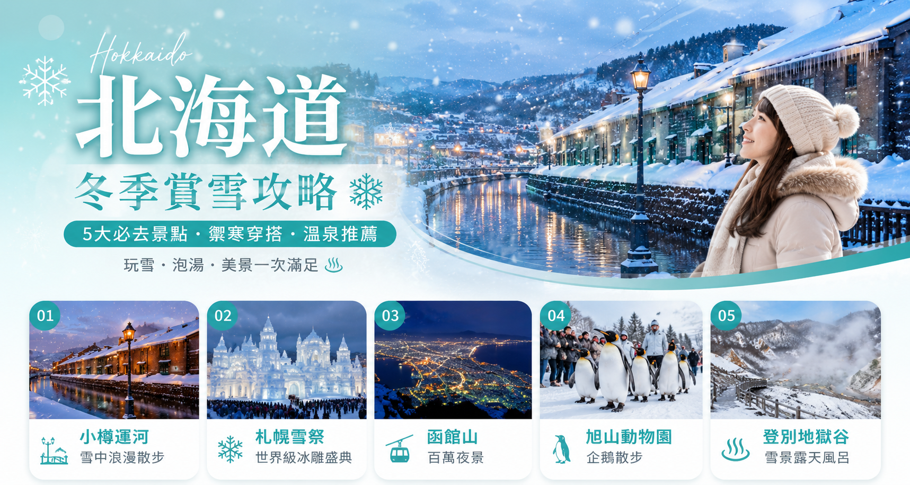

沖繩自駕4天3夜攻略｜美麗海水族館到古宇利島
不想受凍？沖繩一年四季都暖和！自駕環島路線、美麗海水族館、古宇利大橋，亞熱帶海島度假完整規劃。
繼續閱讀 →
零下15度的白色奇蹟，小樽運河、雪祭、溫泉一次收錄
冬天的小樽運河是北海道最經典的雪景。運河兩旁的紅磚倉庫覆蓋白雪，搭配瓦斯燈倒影，走在石板路上彷彿穿越時空。
每年2月上旬舉辦，大通會場展出超過100座大型雪雕，夜間搭配燈光秀超壯觀。TSUDOME會場有雪上溜滑梯等免費體驗。
函館山夜景被譽為「世界三大夜景」之一，冬天積雪的市街兩側閃爍燈光，宛如散落的寶石。搭纜車3分鐘即達山頂。
冬天最人氣的活動就是看企鵝排隊散步！國王企鵝每天兩次在園區內自由行走，超萌畫面讓人融化。還有北極熊跳水、海豹旋轉泳等行為展示。
火山地熱讓登別一年四季都有溫泉，冬天泡露天風呂一邊看雪花飄落，一邊感受熱氣蒸騰，冰火交融的體驗超難忘。
北海道1-2月氣溫 -5 到 -15°C，旭川可能低於 -20°C。洋蔥式穿法是關鍵：
如果你考慮在北海道冬天自駕，請先評估：
| 溫泉區 | 特色 | 從札幌 |
|---|---|---|
| 登別溫泉 | 9種泉質、地獄谷雪景 | JR 1.5hr |
| 定山溪溫泉 | 最近札幌、豐平峽冰瀑 | 巴士 1hr |
| 層雲峽溫泉 | 冰瀑祭（1-3月）、銀河流星瀑布 | JR+巴士 2.5hr |
冬天的小樽運河是北海道最經典的雪景。運河兩旁的紅磚倉庫覆蓋白雪，搭配瓦斯燈倒影，走在石板路上彷彿穿越時空。
每年2月上旬舉辦，大通會場展出超過100座大型雪雕，夜間搭配燈光秀超壯觀。TSUDOME會場有雪上溜滑梯等免費體驗。
函館山夜景被譽為「世界三大夜景」之一，冬天積雪的市街兩側閃爍燈光，宛如散落的寶石。搭纜車3分鐘即達山頂。
冬天最人氣的活動就是看企鵝排隊散步！國王企鵝每天兩次在園區內自由行走，超萌畫面讓人融化。還有北極熊跳水、海豹旋轉泳等行為展示。
火山地熱讓登別一年四季都有溫泉，冬天泡露天風呂一邊看雪花飄落，一邊感受熱氣蒸騰，冰火交融的體驗超難忘。
北海道1-2月氣溫 -5 到 -15°C，旭川可能低於 -20°C。洋蔥式穿法是關鍵：
如果你考慮在北海道冬天自駕，請先評估：
| 溫泉區 | 特色 | 從札幌 |
|---|---|---|
| 登別溫泉 | 9種泉質、地獄谷雪景 | JR 1.5hr |
| 定山溪溫泉 | 最近札幌、豐平峽冰瀑 | 巴士 1hr |
| 層雲峽溫泉 | 冰瀑祭（1-3月）、銀河流星瀑布 | JR+巴士 2.5hr |
不趕行程、不搬行李，在地司機帶你玩遍台灣